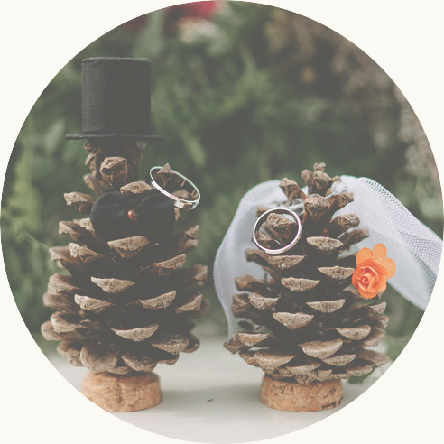

Vzali jsme se!
Byla to vážně jízda. Děkujeme všem Vám kdo jste nám pomohli ji uskutečnit a všem Vám kteří ji s námi podnikli. Velmi si vážíme, že Vás bylo tolik ― bezmála 100 lidí! V neposlední řadě děkujeme Všem za vaše štědré (a někdy i vtipné) dary 🙂

Fotografie
Hlavní album fotografií od našeho fotografa najdete tady.
Album (včetně fotek z pátečních příprav) od Jendy je tu.
Album od Barči najdete zde.
Ztráty a nálezy
Přivezli jsme si domů několik věcí, které nejsou naše ― zde je foto. Pokud něco poznáváte, dejte nám vědět a domluvíme se na předání.
Dodavatelé
- Místo ― Statek Smrčiny
- Jídlo ― Friendfood
- Dorty ― Curkárna Cukrlenka
- Kapela ― Ajfrband
- Květiny ― Farma Kveteto